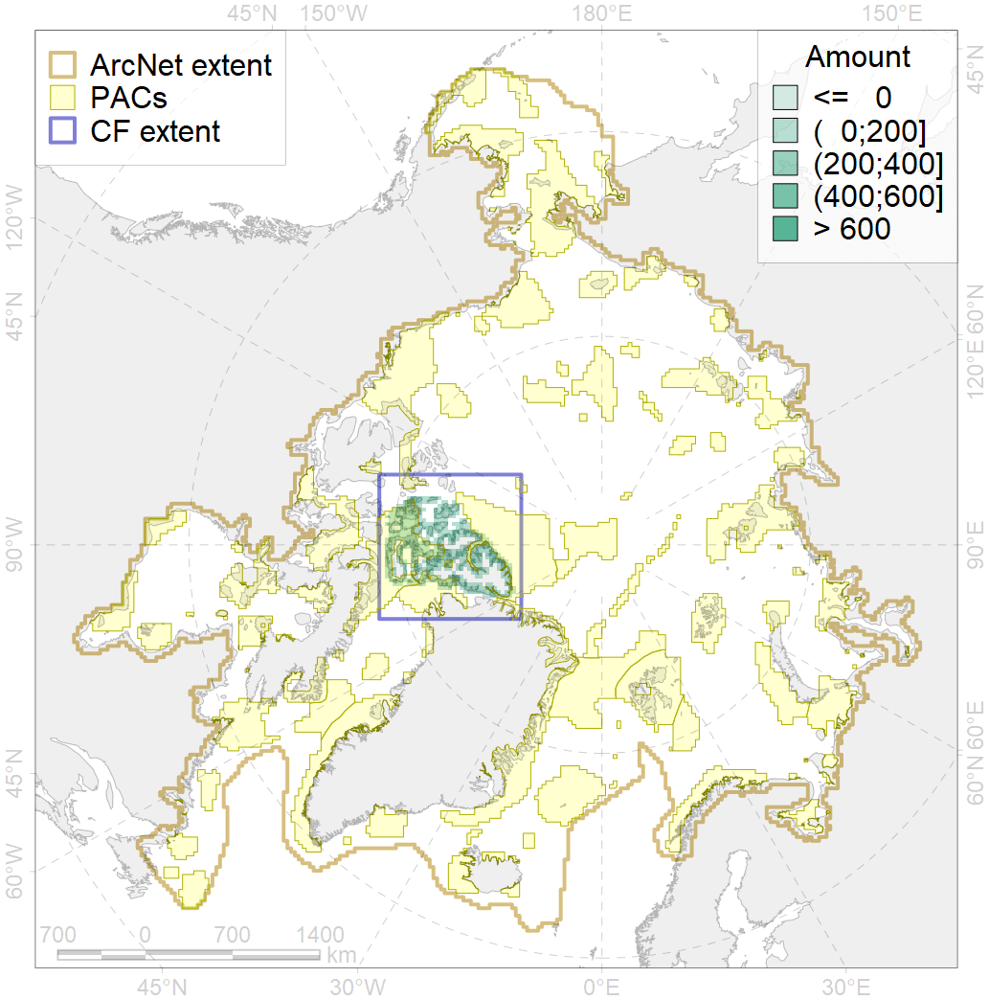
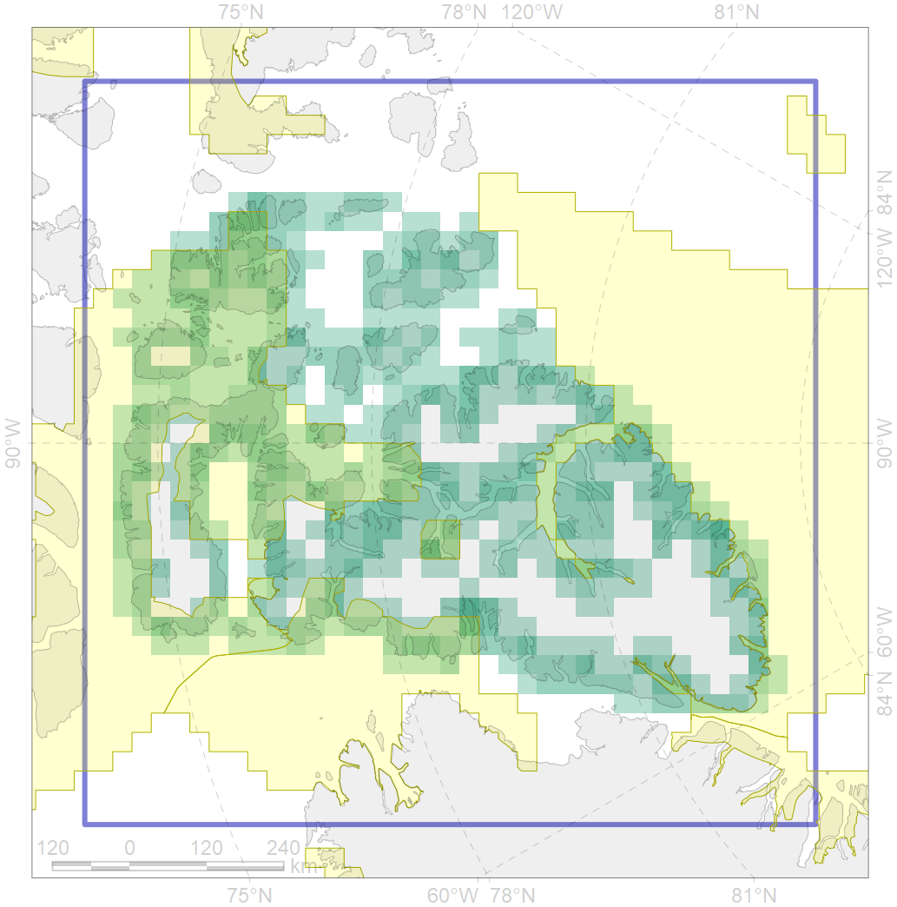

6008

| CF ID | 6008 |
| CF Name | Brent goose (Branta_bernicla_hrota) Canadian High Arctic breeding&moulting grounds |
| Time Period | 2013 |
| Source(s) | Robinson & Colhoun 2006, https://birdsna.org/Species-Account/bna/species/337/articles/introduction, https://commons.wikimedia.org/wiki/File:Branta_bernicla_map.png |
| Seasonality | June-September |
| Depth Horizon | ≥0 m |
| Methodology | Field Data |
| Use Restrictions | Open source |
| Author Name | Gavrilo, Tertitski |
| Notes | |
| Convervation Target | 0.24 |
| Target Achievement | 0.486 (Scenario: 202.3%) |
| PAC ID | Proportion in the PAC | Contribution to ArcNet Target Achievement | PAC’s Contribution to the Achieved Target |
|---|---|---|---|
| 51 | 5.9% | 22.6% | 11.2% |
| 52 | 31.6% | 126.8% | 62.7% |
| 53 | 1.4% | 4.0% | 2.0% |
| 54 | 9.7%9.7% | 40.5%40.5% | 20.0%20.0% |
| inner | 48.6% | 193.8% | 95.8% |
| outer | 51.4% | 8.5% | 4.2% |
| † supplement values are for area consistence whereas principal values are for Accenter compatible gridded stats |
{kind=link}